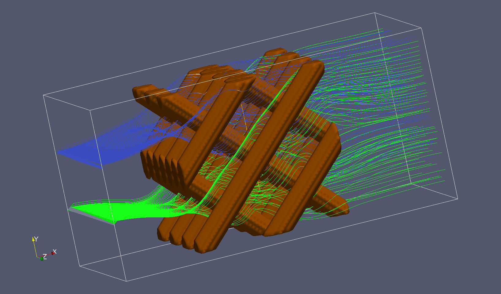

Bonus Exercise - A stationary fluid mixer¶
You should now have gained enough ParaView skills in order to re-create the visualization on the Home page of these course notes:

The visualization shows a so-called static (or stationary) mixer. In such a mixer two fluids enter separated on one side and exit mixed on the other side. The basis for the visualization is the data file SMRX.vtk.
Good luck!
Tips
- After loading the data use the Information tab to see what is actually in the dataset.
- Before applying any filters use the available representations in the toolbar to get some initial insight into the data.
- Try to figure out which filters you need to produce the visual elements shown in the picture on the title page.